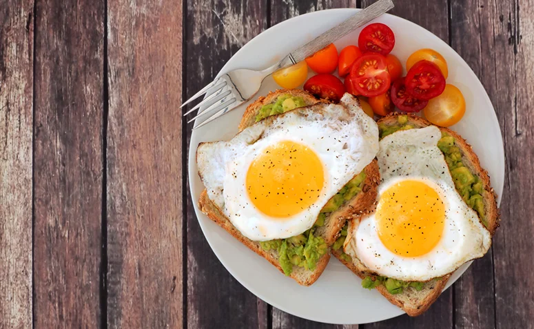

Ovos cozidos com pão integral e frutas vermelhas

Ingredientes:
•2 Ovos
•400 ml de água morna
•25g de fermento fresco para pão
•100 ml de óleo
•1 colher de sobremesa de sal
•2 colheres de sopa de açúcar mascavo
•1 xícara de chá de aveia
•½xícara de chá de gérmen de trigo
•1 xícara de café de semente de linhaça
•2 copos de requeijão de farinha de trigo integral
•Farinha até dar o ponto
•250g de morangos
•250g de framboesas
•100g de amoras
•500g de cerejas sem caroços
•¼xícara de chá de amêndoas picadas
Preparo:
Ovos cozidos
Leve uma panela pequena com água ao fogo médio.
Quando ferver, com cuidado e o auxílio de uma colher, mergulhe o ovo e abaixe o fo(se você colocar o ovo com cuidado, a casca não trinca).
Obs.: Se preferir, com uma agulha faça um furinho na base do ovo e adicione caldo de limão à água(ele ajuda a manter a casca do ovo sem rachaduras).
Conte os minutos para gema cozida, mas sem passar do ponto, 12 minutos.
Para a gema cremosa, 7 minutos.
Para o ovo mollet (clara cozida firme e gema mais líquida), 6 minutos.
Para o ovo quente (clara cozida e macia e gema bem mole), 4 minutos.
Com uma colher, tire o ovo da panela e mergulhe numa tigela com água fria filtrada até ele amornar.
Para descascar, role delicadamente o ovo sobre a tábua e vá puxando os pedacinhos de casca.
Passe novamente o ovo na tigela com água para descartar qualquer casquinha que tenha sobrado.
Pão integral
Em uma vasilha, misture o fermento com açúcar e acrescente os outros ingredientes.
Em uma superfície lisa e enfarinhada, sove bem a massa e deixe crescer até dobrar de volume.
Modele os pães e coloque em forma de bolo inglês forrada com papel manteiga.
Deixe crescer novamente.
Leve ao forno a 200°C, por aproximadamente 25 a 30 minutos (observe que o tempo pode ser diferente, dependendo do forno)